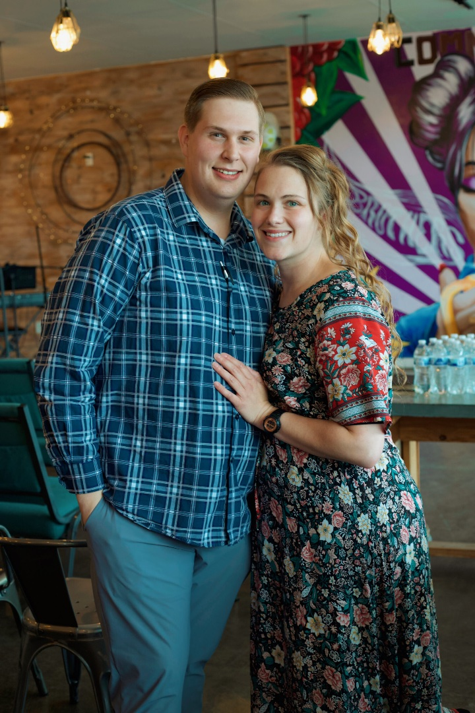

The Bible is the inspired Word of God and the authority for salvation and Christian living. See 2 Timothy 3:15–17.
POM
About
Jesus changes everything.
Practical. Powerful. Biblical.POM is a local church with a simple vision: people connected, Jesus experienced, purpose activated.
A church where people can live a better, more fulfilled life in Jesus.
The Pentecostals of Manhattan was planted to serve Manhattan, Kansas with biblical preaching, Spirit-filled worship, discipleship, and genuine community.
The mission is expressed in three movements: connect with people and be the church; experience Jesus and the Holy Ghost; empower others in their Kingdom purpose.

Leadership
Pastors Landon + Katlyn Dillon.
Landon and Katlyn moved to Manhattan in 2023 to plant and launch The Pentecostals of Manhattan. They have served as Bible study teachers and interim pastors, launched campus ministry, and supported statewide youth camps and programs centered on Jesus and His Word.
Pastor Dillon is a licensed minister with the United Pentecostal Church International.
Connect with POM ↗What we believe
Biblical faith. Lived fully.
A concise overview of POM’s published beliefs. Open each item for more.
There is one God. Jesus Christ is God manifested in flesh — fully God and fully man. See Deuteronomy 6:4, Colossians 2:9, and 1 Timothy 3:16.
Every person needs salvation, which comes by grace through faith in the atoning work of Jesus Christ. POM teaches the apostolic response of repentance, baptism in Jesus’ name, and receiving the Holy Spirit. See Acts 2:38–39 and Romans 6:3–4.
Christians are called to love God and others, live holy lives inwardly and outwardly, worship joyfully, and expect the gifts of the Spirit to be active in the church today.
Jesus Christ will return for His church, followed ultimately by resurrection and final judgment. See 1 Thessalonians 4:16–17 and Revelation 20:11–15.